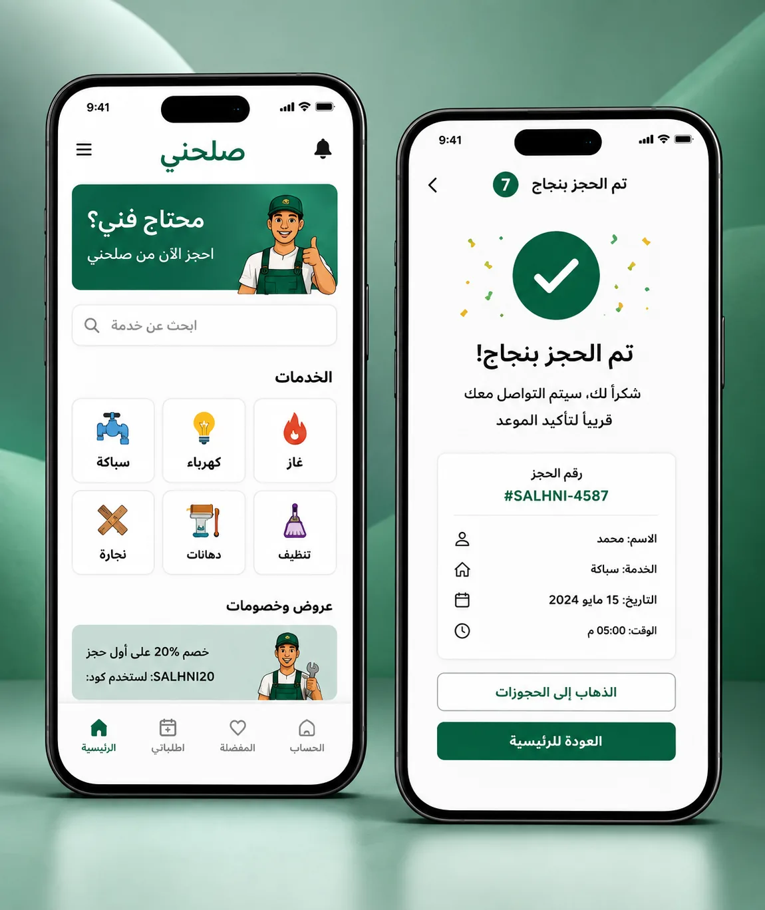

Salle7ny · صلحني
A service platform concept connecting customers with technicians such as electricians, plumbers, carpenters and other home-service providers. The project focuses on booking, provider details, tracking, reviews and communication.
